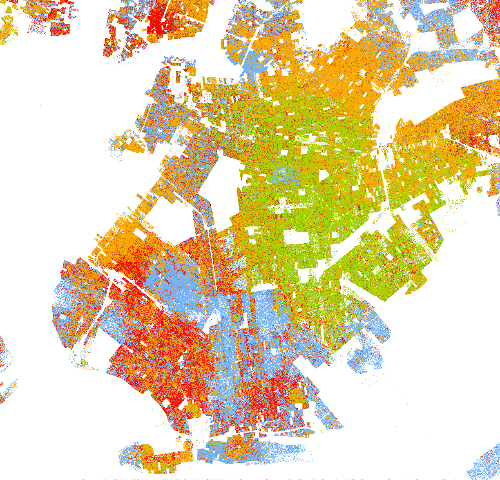
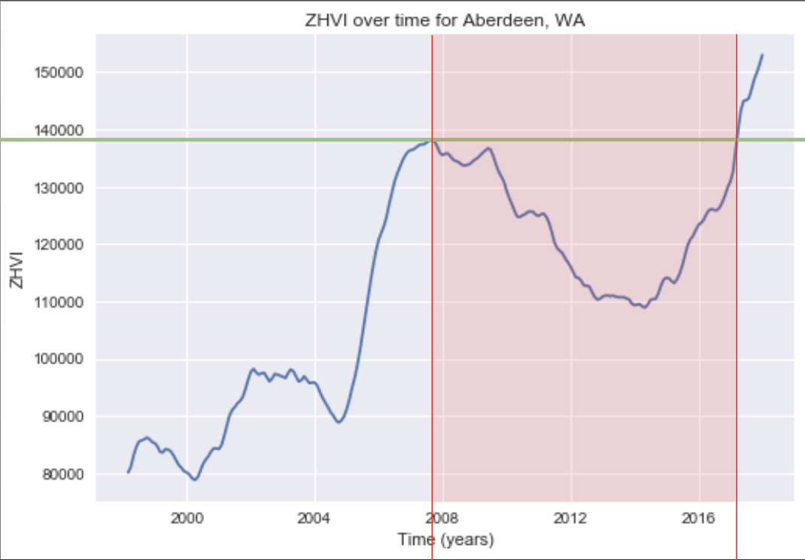
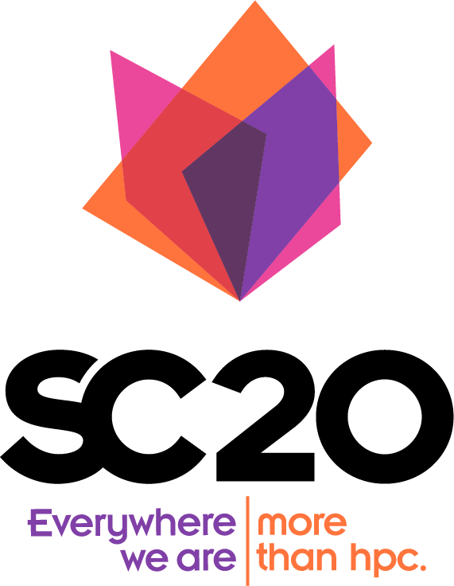

Hi there!
I'm an aspiring data scientist and applied scientist seeking new opportunities at like-minded companies.
I'm passionate about novel methods of generating scalable insights from large datasets, specifically time-series and spatial data.
Recently I've also been exploring an interest in High-Performance Computing (HPC).
Right now, I'm an intern at Amazon Web Services, helping to make AWS SageMaker Data Wrangler the best big data prep tool on the market.
At UC San Diego, I'm involved in the Supercomputing Competition team for the San Diego Supercomputer Center as well as an
independent researcher working under the Halicioglu Data Science Institute at UCSD. I also lead the projects committee
of the Data Science Student Society at UCSD and work on avionics for the university's Rocket Propulsion Lab, helping to put
the first collegiate liquid-fueled rocket into space.
In my free time, I enjoy keeping up with the latest in the world of Machin Learning, competing in collegiate debate,
and (attempting to) cook new things.
Below you can find my current projects, samples of my past work, and links to contact me.
What I'm Working On
-
AWS SageMaker Data Wrangler
2021 Software Development Engineering Internship .
I'm developing and releasing some awesome new features into Data Wrangler.
SageMaker Data Wrangler is the most popular data preprocessing tool in the world and is used by data science teams at some of the world's largest companies.Details:
-
Towards an MCMC-driven Metric of Racial Segregation due to Redlining
This is my 2020 HDSI Undergraduate Scholarship Research.
The goal is to determine the degree to which 1930s-era redlining maps still describe racial segregation in US cities.Details:
 -
Sigmet
Sigmet (Signal Metrics Library) is a Python library that can detect and quantify negative shocks in time-series data.
Details:
 -
Student Cluster Competition 2020
I'm honored to have been selected by the San Diego Supercomputer Center to represent UCSD in an international competition to build the world's fastest supercomputer in 36 hours.
UPDATE: Happy to announce that my team won 4th place overall at this year's competition, outpacing competition veterans such as MIT and UIUC.
Details:

Past Projects
-
Base-11 Telemetry Dashboard
A full-stack dashboard designed to take telemetry data from Rocket Propulsion Lab's Marginal Stability rocket and present it in an efficient manner.
Details:
-
Slackify
A feature-rich extension for Facebook Messenger that can do all sorts of things. See the repository for more details!
Details:
-
PlaneClassifier
A simple convolutional neural net that can discern the manufacturer of an aircraft from an image with 96% accuracy.
This project was my first intro to CNNs and also my first time scraping my own dataset from scratch.Details: